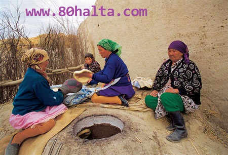
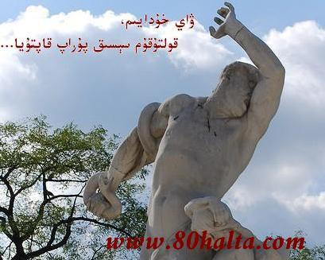

ئەسسالامۇ ئەلەيكۇم مۆھتىرەم تورداش، بلوگىمىزغا خۇش كەپسىز، قۇتلۇق قەدەملىرىڭىزگە مەرھابا!
 سوغۇقجانلارنىڭ ئۆزىنى ئاسرىشىدىكى ئېسىل مەھسۇلات<<ئەفرۇز مەلھىمى>>
سوغۇقجانلارنىڭ ئۆزىنى ئاسرىشىدىكى ئېسىل مەھسۇلات<<ئەفرۇز مەلھىمى>>
ئاپتورى:Birzat ۋاقتى:2011-12-31

تەجىربىلىك مومىلىرىمىز ئائىللەردە ئىسسىقلىق دورا-دەرمەكلەر ۋە قوي، تۆگە مايلىرى، تۇخۇم سېرىقى دېگەنلەردىن ئىسسىقلىق مەلھەم تەييارلاپ سوغۇق مىجەز نەۋرە، بالا-چاقىلىرىنى شىپالىق قوللىرى بىلەن مايلاپ ئاپتاپقا قاقلاپ سوغۇقتىن تېنى ئاجىز، بەل -پۇتى تالىدىغان، كېچىلىرى سېيىپ ياتىدىغان، پېيى تارتىشىدىغان ئەھۋاللارنى داۋالاپ كەلگەن. ئەنئەنىۋى ئىسسىقلىق، قۇۋۋەتلىك غىزالىنىش، بەلباغ باغلاپ بەل-بۆرەكنى ئىسسىق ساقلايدىغان، مەزمۇت ئۆتۈكلەر بىلەن قەھرىتان قىشنى چىقىرىدىغان يېمەكلىك ۋە تۇرمۇش ئۇسۇللىرىمىزنىڭ ئۆزگىرىپ يېمەك ۋە ئۇسسۇزلۇققا توڭلاتقۇدا مۇزلاتقان يېمەك-ئىچمەكلەرنىڭ ئىستىمال ئادىتىمىزگە ئايلىنىشى پەي-مۇسكۇللارنى بوشىتىپ، كەيپىياتنى سۇسلىتىپ سوغۇقتىن بولغان ساقسىزلىقلارنى پەيدا قىلىپ بۇ خىل ئىسسىقلىق مەلھەملەرگە بولغان ئىھتىياجىمىز كۈندىن - كۈنگە ئىشىپ بارماقتا. ئەفرۇز ھەممىباب مەلھىمىنىڭ تەسىرى ئالاھىدە بولۇپ....
خەتكۈش: ئەفرۇز
كۈدە ئارقىلىق ئائىللەردە كېسەل داۋالاش-رېتسىپلار
ئاپتورى:Birzat ۋاقتى:2011-04-21
كۈدە تەركىبىدە ۋىتامىنC ۋە كالتىسىي،فوسفور، تۆمۈر قاتارلىقلار بار. ھەر 100گرام يېڭى كۈدە تەركىبىدە 39مىللىگرام ۋىتامىنC، كالتىسي 84 مىللىگرام،43مىللىگرام فوسفور،8.9مىللىگرام تۆمۈر بولىدۇ، بولۇپمۇ ۋىتامىنCنىڭ مىقدارى پېدىگەننىڭكىنىڭ 4 ھەسسىسىگە باراۋەر كېلىدۇ.
كۈدىنىڭ تەبىئىتى ئىسسىق بولۇپ،بۆرەكنى ئىللىتىپ، باھنى قۇۋۋەتلەيدۇ، تالغا مەنپەئەت يەتكۈزۈپ، ئاشقازاننى ساغلاملاشتۇرىدۇ،خىلىتنى ھەرىكەتكە كەلتۈرۈپ، قاننى تەڭشەيدۇ. كۈدىنى كۆپ ئىستېمال قىلىپ بەرگەندە جىگەرنى ئاسراپ، تال-ئاشقازاننىڭ قۇۋۋىتىنى كۈچەيتىدۇ.
كۈدە قاندىكى ياغنى تۆۋەنلىتىش ۋە قان تومۇرلارنى كېڭەيتىش رولىغا ئىگە بولۇپ،يۈرەك-مېڭە قان تومۇر كېسىلى ۋە يۇقىرى قان بېسىمنى داۋالاشقا مۇۋاپىق كېلىدۇ. كۈدە يەنە تېرە تۈك خالتىسىدىكى قارا پېگمىنىتنى ئۆزگەرتىدۇ ۋە تېرىدىكى ئاق داغنى يوقىتىدۇ، چاچنى قاپقارا ۋە پارقىراق قىلىدۇ.
رېتسىپلار:
خەتكۈش: كۈدە
شور تۇز ئارقىلىق بەدەن سىرتىدىن ئىسسىق ئۆتكۈزۈپ ساغلاملىقنى ئاسىراش
ئاپتورى:Birzat ۋاقتى:2011-03-08

زامانىمىزدىكى كىشىلەرنىڭ قۇياش نۇرىدىن خالىي بىنا ئۆيگە سولىنىپ جىددىي تۇرمۇش ھەلەكچىلىكىدە باش كۆتۈرمەي ئىشلەشلىرى، ھەركەتنىڭ ئاز بولىشى، سوغۇق تەبىئەتلىك ۋە خىمىيەلىك خۇرۇچلار بىلەن تەييارلانغان سۈنئىي ئىچىملىكلەرنىڭ كۆپلەپ ئىچىلىشى، خىمىيەلىك ئوغۇت بىلەن پارنىكتا تەييارلانغان سەي-ئوتياشلارنىڭ ئىستىمال قىلىنىشى ۋە بۇلارنىڭ پارنىكتىن چىقىپلا توڭلاتقۇغا كىرىپ يەنە بىر سۈنئىي ساقلىنىش جەريانىنى باشتىن ئۆتكۈزۈشى قاتارلىقلار سەۋەبىدىن كىشىلەردە قان سوۋۇش ئارقىلىق قاننىڭ ھەركىتى ئاجىزلاش، قان تومۇرلار تارىيىش، قان ۋە جىگەردە ماي ئارتىپ كېتىش، بەل-بۆرەك سوۋۇش، كۆپ تەرلەش، ماغدۇرسىزلىق، بەل-پۇت ئاغرىقى، بەدەننىڭ ئېممۇنىت ئىقتىدارى ئاجىزلاش قاتارلىق ئالامەتلەر كۆرىنەرلىك ئوموملاشماقتا.
ئاستىدىن ئىسسىتىدىغان قۇرۇلمىلىق ئۆيلەردە ئولتۇرغۇچىلار شور تۇزنى چوقۇپ ئۇششاقلاپ تونۇر سىلىشتا تەييارلىغاندەك لاي ئېتىپ تەييارلاپ ئۆينىڭ مۇۋاپىق دەپ قارالغان ۋە ئوبدان ئىسسىيدىغان جايدىن بىر كارۋات چوڭلىقىدا ئورۇننىڭ يەر يۈزىگە بەش سانتىمېتىر قىلىنلىقتا تەكشى ياتقۇزۇپ قىش كۈنلىرى
ئاشقازاننىڭ ئېسىل دورىسى - جاۋارىش ئەمبەر
ئاپتورى:Birzat ۋاقتى:2011-02-01
ئەسسالامۇ ئەلەيكۇم. ماڭا ئاشقازان ياللۇقى، ئاشقازان 12 بارماق ئۈچەي ياللۇقى ھەم يارىسى دەپ دىئاگنۇس قويۇلغىلى خىلى يىللار بولۇپ قالدى. تېۋىپلار ئاشقازان سوۋۇپ كېتىپتۇ دەپ دورىلارنى بەردى، دوختۇرخانىلاردىمۇ كۆپ داۋالانغان بولساممۇ ياخشى بولالمىدىم. ماڭا ئۇيغۇر تېبابىتىنىڭ مۇشۇ ھەقتە ئەڭ ياخشى مەنپەئەت قىلىدىغان بىرەر دورىسىنى تەۋسىيە قىلغان بولساڭلار.
ۋەئەلەيكۇم ئەسسالام
ئۇيغۇر تېبابىتىدە ئاشقازان كېسەللىرىنىڭ سەۋەپچى ئامىللىرىغا ۋە بىمارنىڭ مىزاج ئالاھىدىلىكىگە قاراپ ئوخشاش بولمىغان داۋالاش چارىلىرى ۋە دورىلارنى ئىشلىتىشى مومكىن. سىلى دېگەن ئەھۋالغا نىسبەتەن ئۈنۈملۈك بولغان، تەسىرى ئالاھىدە ياخشى بولغان دورا <<مەجۈنى جاۋارىش ئەمبەر>> نى تەۋسىيە قىلاي. بۇنىڭ ھازىرچە مېنىڭ بىلىشىمدە ئىشەنچلىك ھەم ئۈنۈمى ياخشى بولىۋاتقىنى قاراقاش ناھىيلىك ئۇيغۇر تېبابەت دوختۇرخانىسى ئىشلىگىنىدۇر. بۇ دورىنىڭ خام ماتىرياللىرى كەم بولغانلىقى سەۋەبىدىن تولا ھاللاردا تاپقىلى بولمايدۇ. (قارا قاش نايىلىك ئۇيغۇر تېبابەت دوختۇرخانىسىنىڭ ئۆزىدىن سىرتقا ئاشمايدۇ).
مەجۈنى جاۋارىش ئەمبەرنىڭ ئاساسلىق تەركىۋى:
خەتكۈش: ئاشقازان
بۇرۇن ياللۇغىنى داۋالاشتىكى ئاددىي رېتسىپ ۋە پەرھىزلەر
ئاپتورى:Birzat ۋاقتى:2011-01-07
قوشۇمچە:
بۇ ماقالىنى ئەسلى مەن 3 يىل بۇرۇن تەييارلاپ بلوگىمغا يوللىغان، كىيىن شىنجاڭ ئاياللىرى ژورنىلىغا بىسىلغان ئىدى. ئۇلار بۇ ماقالىنى ئىسلىتىشتىن بۇرۇن مېنىڭ سەمىمگە سىلىپ قويغان ئىدى. يېقىندىن بىرى بۇ يازما لازىم بولۇپ بلوگىمدىن ئىزدىسەم تېپىلماي قويدى، ئالدىنقى بلوگ ئۇسلۇبىدىكى يازمىلارنى يۆتكىگەندە يۈتتۈرۈپ قويغان بولۇشۇم مومكىن دەپ ئىچىم پۇشۇپ ئولتۇرۇپ گۇگىلدىن ئىزدىسەم پەن-تېخنىكا گېزىتىگە بېسىلغان بۇ كۆتمەك يازما بولسىمۇ تۇرىدۇ. كۆپ قىسقارتىۋەتكەن بولسىمۇ بۇ يازمىنىڭ تېپىلغېنىغا خوش بولۇپ قالدىم. چۈنكى ئاۋۇ رېتسىپنىڭ ئۈنۈمى بۇرۇن ياللۇقى ئۈچۈن خىلىلا ياخشى ئىدى. بۇرۇن ياللۇقىنى داۋالاش ھەققىدىكى يازما <<شىنجاڭ ئاياللىرى>> ژورنىلىنىڭ 2008-يىللىق 10-سانىغا (شۇنداقراق ئېسىمدە) بېسىلغان ئىدى. شۇ سان ژورنال قولىدا بارلار يوللاپ قويسا مىننەتدار بولغان بولاتتىم. رەھمەت!
خەتكۈش: بۇرۇن
دىئابېت بىمارلىرى ئۈچۈن دورىلىق چاي رېتسىپلىرى
ئاپتورى:Birzat ۋاقتى:2010-12-31

1.رېتسىپ:
سۆئلەپ مىسىرى30 گىرام، شاقاقۇل 30 گىرام، قىزىلگۈل6 گىرام، ياڭاق مېغىزى 60 گىرام، ئادەمگىياھ 6 گىرام.
ياڭاق مېغىزىنى ئايرىم تالقان قىلىۋېلىپ ، قالغان خۇرۇچلاردىن چايلىق سوقتۇرۇپ مۇۋاپىق مىقداردا دەملەپ ھەر قېتىملىق چايغا ياڭاق مېغىز تالقىنىدىن بىر قوشۇقتىن سىلىپ ئىچىپ بىرىلىدۇ.
خەتكۈش: دىئابېت
سۈت كۆپەيتىش چايلىق رېتسىپى - تۇغۇتلۇق ئاياللار ئۈچۈن
ئاپتورى:Birzat ۋاقتى:2010-12-12
1.رېتسىپ:
خۇرۇچلىرى:
سەۋزە ئۇرۇقى، چامغۇر ئۇرۇقى، ئارپا بەدىيان، سېرىق چېچەك، زېرە قاتارلىقلار 10 گىرامدىن.
قورۇغان نۇقۇت تالقىنى ئىككى قوشۇق، ياڭاق ئىككى دانە.
نوقۇت ، ياڭاق تالقانلىرىنى بىر چىنىگە سىلىپ باشقا خۇرۇچلاردا تەييارلىنىپ دەملەنگەن قىززىق چاينى ئۈستىگە قۇيۇپ ئارىلاشتۇرۇپ ئىستىمال قىلىنىدۇ. (قاينىتىپ ئىچسىمۇ بولىدۇ)
سۈتى ئاز تۇغۇتلۇق ئاياللار ئىچىپ بەرسە قۇۋۋەت بولىدۇ، سۈتىنى تېز كۆپەيتىدۇ. سۈتنىڭ ئوزۇقلۇق تەركىۋىنى يۇقۇرى كۆتۈرىدۇ.
- 80خالتا دۇكان رېتسىپى
خەتكۈش: سۈت
سىركىنىڭ شىپالىق خۇسۇسىيەتلىرى
ئاپتورى:Birzat ۋاقتى:2010-11-20

بۇ مىۋىلىك دەرەخلەرنىڭ سىقىپ چىقىرىلغان سۈيى بولۇپ ، ئۈزۈم ، خورما ، ئەنجۈر ، شىكەر قۇمۇشى ۋە شۇنىڭغا ئوخشاش شىرنىلىك ، تاتلىق مىۋىلەرنى سىقىپ تەييارلىنىدۇ. بۇلارنىڭ ئىچىدە ھەممىدىن ياخشىراقى ئۈزۈم سۈيىدىن ئېلىپ ئىشلەنگىنىدۇر . تېبابىتىمىزدىمۇ ئۈزۈم سىركىسى ئىشلىتىلىدۇ .
تەبىئىتى : ئىككىنچى دەرىجىدە قۇرۇق سۇغۇق .
قان ۋە سەپرانىڭ ئۆتكۈرلىكىنى پەسەيتىش ، قىزىتما ، ياللۇغ قايتۇرۇش ، ئاغرىق پەسەيتىش ، ئىشتىھانى ئېچىش ، توسالغۇلارنى ئېچىش ، ئىچ سۈرۈشنى توختىتىش ، ھارارەت پەسەيتىش، تاماق سىڭدۈرۈش ، غەيرىي تەبىئىي خىلىتلارنى تازىلاش .
ئىشلىتىدىغان كىسەللىكلەر :
خەتكۈش: سىركە
80خالتا رېتسىپى-شىپايى نەپەس قايناتمىسى
ئاپتورى:Birzat ۋاقتى:2010-11-09
قىش كىرىپ سوغۇق چۈشۈشكە باشلىغاندا ئۆپكە، نەپەس يوللىرى كېسەللىكلىرى قوزغۇلۇپ ياكى يېڭىدىن پەيدا بولۇپ دوختۇرخانىلارغا كېسەللەر تولۇپ كېتىدۇ. بولۇپمۇ زېققە، كاناي شاخچە ياللۇقى، ئۆپكە ئىششىقى، زۇكام قاتارلىق كېسەللىكلەر بىر ئائىلە كىشىلىرىنى خاتىرجەمسىز قىلىدۇ. بۇنىڭغا قارىتا يىنىكرەك بولغاندا ئائىللەردە قاينىتىپ ئىچكۈزۈپ بەرسە ئوبدان ئۈنۈمى بولىدىغان بىر رېتسىپ - 80خالتا شىپايى نەپەس قايناتمىسىنى تونۇشتۇرۇشنى لايىق كۆردۇق.
رېتسىپ تەركىبى:
كەپتەر شورپىسىنى تاييارلاشنىڭ ئەڭ ياخشى ئۇسسۇلى قايسىدۇ؟
ئاپتورى:Birzat ۋاقتى:2010-09-17

كەپتەر شورپىسىنى قانداق تەييارلاپ ئىچسە ئۈنۈمى ياخشى بولىدۇ؟ بولۇپمۇ بەدەن سوۋۇپ بۆرەك ئاجىزلىغان ئەھۋالدا قايسى خىل دورا-دەرمەكلەرنى ئىشلەتسە بولىدۇ؟
بىر كىتابتىن ئوقۇشۇمچە 500گىرام قوي گۆشىگە 2 گىرام زەپە سىلىپ شورپا تەييارلاپ ئىچىپ بەرسە قاننى قىززىتىپ شەھۋەت سۇسلاشقا مەنپەئەت قىلىدۇ دەپ يېزىپتۇ. 2 گىرام زەپەنى بىرلا قىتىمدا ئىچسە ئەكىس تەسىرى بولماسمۇ؟ مۇشۇلار ھەققىدە چۈشەنچە بەرگەن بولسىلا، رەھمەت!!
جاۋاب: كۆرسىتىلگەن رېتسىپ بويچە تەييارلاپ ئىستىمال قىلىپ بەرسە بەدىنى سوغۇق ھېس قىلىدىغان، جىنسىي قۇۋۋىتى ئاجىز، ئاشقازان ياللۇقى، ئۇيقۇسى كۆپ، ھارغىن ھېس قىلىدىغانلار، بالياتقۇ، جىنسىي يولى ياللۇقىغا گىرىپتار بولغان، ئاق خۇن كۆپ كىلىدىغان، بەل-پۇت تىلىپ ئاغرىيدىغان ، جىنسىي ھېسياتى سۇسلىغانلار ئىككى كۈندە بىر قېتىمدىن ئىستىمال قىلىپ بەرسە قۇۋۋەتنىڭ ئەسلىگە كىلىشگە كۆپ ياردىمى بولىدۇ.
باچكا شورپىسى رېتسىپنىڭ تەپسىلاتى:
ئەپلاتوننىڭ رېتسىپى Plato`s Ancient Prescription
ئاپتورى:Birzat ۋاقتى:2010-09-01

بۈگۈنكى كۈندە ھەر خىل خېمىيلىك بۇلغۇنۇش، يېمەك-ئىچمەك كۆپ خىل، قۇۋۋەتلىك بولسىمۇ ساپلىقى يۇقۇرى بولماسلىق ، ھاۋانىڭ سۈپىتىنىڭ ياخشى بولماسلىقى، ھەركەت ئاز بولۇش، ھورۇنلۇق دېگەندەك سەۋەپلەردىن بىزنىڭ بەدەن ساپايىمىز بىلەن ئەپلاتون، ئىسكەندەر زۇلقەرنەيننىڭ زامانىسىدىكى كىشىلەرنىڭ بەدەن ساپاسىدا پەرق ئاز بولمىسا كېرەك. ئەپلاتوننىڭ ئىسكەندەرگە ياساپ بەرگەن دورىسىنىڭ خاسىيىتى تۆۋەندىكىدەك چۈشەندۈرۈلىدۇ : بىرىنچى ئايدا ، ئاق چاچلار قارىيىدۇ ، قارا چاچلار ئاقارمايدۇ ؛ ئىككىنچى ئايدا ، كۆزنىڭ قۇۋۋىتى ئاشىدۇ ، ھەتتا كۈندۈزى يۇلتۇز كۆرۈش مۈمكىن ؛ ئۈچىنچى ئايدا ، ئۇنىڭ سۆزلىرى پاساھەتلىك (چىرايلىك ۋە راۋان ) ۋە تۇلۇق ، مۇكەممەل بۇلىدۇ ؛ تۆتىنچى ئايدا ، ئۇنىڭ تومۇرلىرى ئېچىلىپ قانلىرى راۋانلىشىدۇ ؛ بەشىنچى ئايدا ، غەم-قايغۇلىرى كۆتۈرۈلۈپ ، كۆڭۈل خۇشاللىقى يۈز بىرىدۇ ؛ ئالتىنچى ئايدا ، بەدەنگە چىققان ھەر قانداق چاقا-جاراھەتلەر ساقىيىدۇ ؛ يەتتىنچى ئايدا ، خاتىرىسى كۈچىيىدۇ ۋە ئەقىل-پاراسىتى ئاشىدۇ ؛ سەككىزىنچى ئايدا .....
مەجۇنات دورا رېتسىپلىرىدىن Uyghur traditional Medical Prescriptions
ئاپتورى:Birzat ۋاقتى:2010-08-22

مەجۈنى ئەقرەب
تەركىبى : چايان كۈلى 10 گرام ، جىنتىيانا 5 گرام ، زەنجىۋىل 3 گرام ، قارىمۇچ 6 گىرام ، كاكىنەچ 17 گرام ، قۇندۇز قەھرى 12 گرام ، ھەسەل 3ھەسسە .
تەييارلىنىشى : چىڭسەي ئۇرۇقى سۈيى بىلەن ھەب قىلىنىدۇ .
تەسىرى : بۆرەك ۋە دوۋساقتىكى تاشنى ئېرىتىدۇ .
ئىشلىتىلىشى : بۆرەك ۋە سۈيدۈك يوللىرىدىكى ھەر خىل تاشلارنى ۋە دوۋساقتىكى تاشنى ئېرىتىپ چۈشۈرۈشكە ئىشلىتىدۇ .
ئىشلىتىش مىقدارى : 6 گرامدىن كۈندە ئۈچ ۋاخ بېرىلىدۇ .
خەتكۈش: رېتسىپ
سىركىنىڭ ئۇيغۇر تېبابىتىدە ئىشلىتىلىشى [شىپالىق رېتسىپلار]
ئاپتورى:Birzat ۋاقتى:2010-08-14
بۇ مىۋىلىك دەرەخلەرنىڭ سىقىپ چىقىرىلغان سۈيى بولۇپ ، ئۈزۈم ، خورما ، ئەنجۈر ، شىكەر قۇمۇشى ۋە شۇنىڭغا ئوخشاش شىرنىلىك ، تاتلىق مىۋىلەرنى سىقىپ تەييارلىنىدۇ. بۇلارنىڭ ئىچىدە ھەممىدىن ياخشىراقى ئۈزۈم سۈيىدىن ئېلىپ ئىشلەنگىنىدۇر . تېبابىتىمىزدىمۇ ئۈزۈم سىركىسى ئىشلىتىلىدۇ .
تەبىئىتى : ئىككىنچى دەرىجىدە قۇرۇق سۇغۇق .
قان ۋە سەپرانىڭ ئۆتكۈرلىكىنى پەسەيتىش ، قىزىتما ، ياللۇغ قايتۇرۇش ، ئاغرىق پەسەيتىش ، ئىشتىھانى ئېچىش ، توسالغۇلارنى ئېچىش ، ئىچ سۈرۈشنى توختىتىش ، ھارارەت پەسەيتىش، تاماق سىڭدۈرۈش ، غەيرىي تەبىئىي خىلىتلارنى تازىلاش . زەھەر قايتۇرۇش..
خەتكۈش: سىركە
بالىلاردىكى ئورنىغا سىيىپ يېتىشنىڭ سەۋەبلىرى ۋە داۋالاش چارىلىرى
ئاپتورى:Birzat ۋاقتى:2010-08-13
 ئادەتتە كىچىك بالىلار 2يېرىم ئۈچ ياشتىن باشلاپلا كىچىسى سۈيدۈكىنى كونترول قىلالايدىغان بولىدۇ، گەرچە بەزەن ۋاقىتلاردا يوتقانغا سىيىپ قويسىمۇ نورمال ئەھۋال دىيىشكە بولىدۇ. ئەگەر بالا 4 ياشتىن كىيىنمۇ كىچىسى يوتقانغا سىيىپ قويسا سىيىپ قويۇش قېتىم سانى ھەپتىسىگە 3 قېتىمدىن ئاشسا، ۋە 6 ئايغىچە داۋام قىلسا بۇ بىر خىل كىسەللىك ھىساپلىنىدۇ.
ئادەتتە كىچىك بالىلار 2يېرىم ئۈچ ياشتىن باشلاپلا كىچىسى سۈيدۈكىنى كونترول قىلالايدىغان بولىدۇ، گەرچە بەزەن ۋاقىتلاردا يوتقانغا سىيىپ قويسىمۇ نورمال ئەھۋال دىيىشكە بولىدۇ. ئەگەر بالا 4 ياشتىن كىيىنمۇ كىچىسى يوتقانغا سىيىپ قويسا سىيىپ قويۇش قېتىم سانى ھەپتىسىگە 3 قېتىمدىن ئاشسا، ۋە 6 ئايغىچە داۋام قىلسا بۇ بىر خىل كىسەللىك ھىساپلىنىدۇ.
بۇ خىل كىسەللىكنىڭ يۈز بېرىش سەۋەبلىرى بەك ئېنىق بولمىسىمۇ تۆۋەندىكى بىر نەچچە خىل ئامىلغا مۇناسىۋەتلىك بولۇشى مۇمكىن.
بەدەن تەرلەش ۋە بەدەندىكى غەيرى پۇراقنى داۋالاش [شىپالىق رېتسىپلار]
ئاپتورى:Birzat ۋاقتى:2010-08-07
سەۋەبى : خىلىتلار سېسىغانلىقتىن ، تېرىنىڭ تەرىپىگە ھەرىكەت قىلغانلىقتىن بولىدۇ . بولۇپمۇ جىددىي ھەركەتلەر بىلەن شۇغۇللىنىپ تەرلىگەندە خىلىتلارنىڭ بۇيى زىيادە بولىدۇ .
يەنە جىنسىي ھەركەتتىن كىيىن يۇيۇنۇشنى كېچىكتۈرۈش ، بىلخاسىيەت مۇخالىپ ۋە تىز ماددىنى بەدەننىڭ سىرتقى تەرىپىگە ھەركەتلىنىدىغان نەرسىنى يېيىش مەسىلەن : ھىڭ ، ھۆلبە ، سامساق ، ھىڭ ئۆسۈملۈكىنىڭ يىلتىزى ۋە يۇپۇرمىقى ۋە شۇلارغا ئوخشاشلارنى يېيىش ، مەزكۇر كىسەللىككە سەۋەب بولىدىغان نەرسىلەردىندۇر . مەزكۇر كىسەللىك يۇشۇرۇن تۇرىدىغان جايلار مەسىلەن : قولتۇق ، يوتىنىڭ يىرىقى ، ئىككى تاشاقنىڭ ئاستى ۋە شۇلارغا ئوخشاش جايلاردا كۆپرەك پەيدا بولىدۇ . بەزىدە تامام بەدەندىن سېسىق بۇي كېلىدۇ . ئارقا تەرەت ، سۈيدۈك ، تەرلەرنىڭ سېسىق بولۇشى ھەم خىلىتلار سېسىغانلىقتىن بولىدۇ .
ﻛﻪﻡ ﻗﺎنلىقنى خەلق ئىچى رېتسىپلىرى بىلەن داۋالاش [شىپالىق رېتسىپلار]
ئاپتورى:Birzat ۋاقتى:2010-07-30
 ﺑﯘ ﺧﯩﻞ ﻛﯧﺴﻪﻟﻠﯩﻜﻨﯩﯔ ﻛﯩﻠﯩﭗ ﭼﯩﻘﯩﺶ ﺳﻪﯞﻩﺑﻰ:ﺋﯩﺴﺘﯧﻤﺎﻝ ﻗﯩﻠﻐﺎﻥ ﻳﯩﻤﻪﻙ-ﺋﯩﭽﻤﻪﻛﺘﻪ ﺯﯙﺭﯛﺭ ﺑﻮﻟﻐﺎﻥ ﺗﯚﻣﯜﺭ، ﯪﻟﻴﻮﻣﯧﻦ،ﻣﯩﺲ ﻣﺎﺩﺩﯨﻠﯩﺮﯨﻨﯩﯔ ﻛﻪﻣﻠﯩﻜﻰ، ﯮﺯﯗﻗﻠﯩﻨﯩﺸﻨﯩﯔ ﻧﺎﭼﺎﺭﻟﯩﻘﻰ، ﯮﺯﯗﻗﻠﯘﻕ ﺑﻪﺩﻩﻧﮕﻪ ﺗﻮﻟﯘﻕ ﺷﯜﻣﯜﺭﯛﻟﻤﻪﺳﻠﯩﻜﻰ،ﻫﻪﺭ ﺧﯩﻞ ﺳﻪﯞﻩﺑﻠﯩﻚ ﻗﺎﻥ ﻳﻮﻗﯩﺘﯩﺶ، ﻗﺎﻥ ﺋﯩﺸﻠﯩﮕﯜﭼﻰ ﯬﺯﺍﻻﺭﻧﯩﯔ ﺯﻩﺧﻤﯩﮕﻪ ﯰﭼﯩﺮﯨﺸﻰ، ﻫﻪﺭ ﺧﯩﻞ ﻗﺎﻥ ﺷﻮﺭﯨﻐﯘﭼﻰ ﻣﻪﺩﺩﻩ ﻗﯘﺭﺗﻼﺭﻧﯩﯔ ﭘﺎﺭﺍﺯﯨﺘﻠﯩﻖ ﺑﯩﻠﻪﻥ ﻳﺎﺷﺎﭖ ﻗﺎﻥ ﺷﻮﺭﯨﺸﻰ ﺗﯜﭘﻪﻳﻠﯩﺪﯨﻦ ﻗﺎﻥ ﯪﺯﻟﯩﻖ ﻛﯩﻠﯩﭗ ﭼﯩﻘﯩﺪﯗ.
ﺑﯘ ﺧﯩﻞ ﻛﯧﺴﻪﻟﻠﯩﻜﻨﯩﯔ ﻛﯩﻠﯩﭗ ﭼﯩﻘﯩﺶ ﺳﻪﯞﻩﺑﻰ:ﺋﯩﺴﺘﯧﻤﺎﻝ ﻗﯩﻠﻐﺎﻥ ﻳﯩﻤﻪﻙ-ﺋﯩﭽﻤﻪﻛﺘﻪ ﺯﯙﺭﯛﺭ ﺑﻮﻟﻐﺎﻥ ﺗﯚﻣﯜﺭ، ﯪﻟﻴﻮﻣﯧﻦ،ﻣﯩﺲ ﻣﺎﺩﺩﯨﻠﯩﺮﯨﻨﯩﯔ ﻛﻪﻣﻠﯩﻜﻰ، ﯮﺯﯗﻗﻠﯩﻨﯩﺸﻨﯩﯔ ﻧﺎﭼﺎﺭﻟﯩﻘﻰ، ﯮﺯﯗﻗﻠﯘﻕ ﺑﻪﺩﻩﻧﮕﻪ ﺗﻮﻟﯘﻕ ﺷﯜﻣﯜﺭﯛﻟﻤﻪﺳﻠﯩﻜﻰ،ﻫﻪﺭ ﺧﯩﻞ ﺳﻪﯞﻩﺑﻠﯩﻚ ﻗﺎﻥ ﻳﻮﻗﯩﺘﯩﺶ، ﻗﺎﻥ ﺋﯩﺸﻠﯩﮕﯜﭼﻰ ﯬﺯﺍﻻﺭﻧﯩﯔ ﺯﻩﺧﻤﯩﮕﻪ ﯰﭼﯩﺮﯨﺸﻰ، ﻫﻪﺭ ﺧﯩﻞ ﻗﺎﻥ ﺷﻮﺭﯨﻐﯘﭼﻰ ﻣﻪﺩﺩﻩ ﻗﯘﺭﺗﻼﺭﻧﯩﯔ ﭘﺎﺭﺍﺯﯨﺘﻠﯩﻖ ﺑﯩﻠﻪﻥ ﻳﺎﺷﺎﭖ ﻗﺎﻥ ﺷﻮﺭﯨﺸﻰ ﺗﯜﭘﻪﻳﻠﯩﺪﯨﻦ ﻗﺎﻥ ﯪﺯﻟﯩﻖ ﻛﯩﻠﯩﭗ ﭼﯩﻘﯩﺪﯗ.
ﻛﯧﺴﻪﻟﻠﯩﻚ ﯪﻻﻣﻪﺗﻠﯩﺮﻯ: ﻛﯚﭖ ﺧﯩﻞ ﺳﻪﯞﻩﺏ ﺗﯜﭘﻪﻳﻠﯩﺪﯨﻦ ﯮﻣﻮﻣﯩﻲ ﺑﻪﺩﻩﻧﻠﯩﻚ ﻗﺎﻥ ﻛﻪﻣﻠﯩﻚ ﭘﻪﻳﺪﺍ ﺑﻮﻟﯘﭖ، ﻣﺎﺩﺩﺍ ﯪﻟﻤﯩﺸﯩﺶ ﺗﻮﺳﻘﯘﻧﻠﯘﻗﻘﺎ ﯰﭼﺮﺍﺵ، ﻗﺎﻧﻨﯩﯔ ﯮﻛﺴﯩﮕﯧﻨﻨﻰ ﺗﯘﺗﯘﺵ ﺋﯩﻘﺘﯩﺪﺍﺭﻯ ﺗﯚﯞﻩﻧﻠﻪﭖ. ﭘﯜﺗﯜﻥ ﺑﻪﺩﻩﻧﺪﯨﻜﻰ ﺗﻮﻗﯘﻟﻤﺎ، ﯬﺯﺍﻻﺭﻏﺎ، ﺋﻜﺴﯩﮕﯧﻦ ﻳﯩﺘﯩﺸﻤﻪﺳﻠﯩﻚ ﺳﻪﯞﻩﺑﯩﺪﯨﻦ ﺗﯩﺮﻩ ، ﺷﯩﻠﻠﯩﻖ ﭘﻪﺭﺩﯨﻠﻪﺭ ﺗﺎﺗﯩﺮﯨﺶ، ﻳﯜﺭﻩﻙ ﺋﯩﻐﯩﺶ،ﻳﯜﺭﻩﻙ ﻫﻪﺭﻛﯩﺘﻰ ﺗﯧﺰﻟﯩﺸﯩﺶ، ﻗﺎﻥ ﯪﻳﻠﯩﻨﯩﺶ ﻳﺎﺧﺸﻰ ﺑﻮﻟﻤﺎﺳﻠﯩﻘﺘﻪﻙ ﯪﻻﻣﻪﺗﻠﻪﺭ ﻛﯚﺭﯛﻟﯜﺵ ﺑﯩﻠﻪﻥ ﯪﺯﻏﯩﻨﻪ ﻫﻪﺭﻛﻪﺕ ﻗﯩﻠﺴﺎ ، ﺑﻪﺩﻩﻥ ﻛﻪﻳﭙﯩﻴﺎﺗﯩﺪﺍ ﻫﻪﺭ ﺧﯩﻞ ﯲﺯﮔﯩﺮﯨﺶ ﭘﻪﻳﺪﺍ ﺑﻮﻟﯘﺵ، ﺑﻮﻟﯘﭘﻤﯘ ﻧﻪﭘﻪﺱ ﺳﯩﻘﯩﻠﯩﺶ، ﻳﯚﺗﯩﻠﯩﺶ ﯬﻫﯟﺍﻟﻠﯩﺮﻯ ﻛﯚﺭﯨﻠﯩﺪﯗ. ﺋﯧﻐﯩﺮ ﺩﻩﺭﯨﺠﯩﺪﯨﻜﻰ ﻗﺎﻥ ﯪﺯﻟﯩﻘﺘﺎ ﯮﻟﺘﯘﺭﺳﯩﻤﯘ ﻗﻮﭘﺴﯩﻤﯘ ﻧﻪﭘﻪﺱ ﺳﯩﻘﯩﻠﯩﺶ ﻛﯚﺭﯨﻠﯩﺪﯗ. ﺑﺎﺵ ﻗﺎﻳﯩﺪﯗ. ﻫﻪﺯﯨﻢ ﺳﯩﺴﺘﯩﻤﯩﺴﯩﺪﺍ ﺋﺌﯩﺸﺘﯩﻬﺎ ﺗﯘﺗﯘﻟﯘﺵ، ﻛﯚﯕﯜﻝ ﺋﯩﻠﯩﺸﯩﺶ، ﻗﻮﺳﯘﺵ، ﻗﻮﺭﺳﺎﻕ ﻛﯚﭘﯜﺵ، ﺋﯩﭽﻰ ﺳﯜﺭﯛﺵ، ﻛﯚﭘﯜﻧﭽﻪ ﻗﻪﯞﺯﯨﻴﻪﺕ ﺑﻮﻟﯘﺵ، ﯮﻣﻮﻣﯩﻲ ﺑﻪﺩﻩﻧﻠﯩﻚ ﻛﺎﻡ ﻣﺎﻏﺪﯗﺭﻟﯘﻕ ﻛﯚﺭﯨﻠﯩﺪﯗ. ﺳﯜﻳﺪﯛﻛﺘﻪ ﯪﻗﺴﯩﻞ ﻛﯩﻠﯩﺶ، ﯰﻳﻘﯩﺴﯩﺰﻟﯩﻖ،ﯪﺳﺎﻥ ﭼﺎﺭﭼﺎﺵ، ﻧﯧﺮﯞﺍ ﯪﺟﯩﺰﻟﯩﻖ ﯪﻻﻣﻪﺗﻠﯩﺮﻯ ﺗﯧﭙﯩﻚ ﻛﯚﺭﯛﻟﯜﭖ ﯬﺭﻟﻪﺭﺩﻩ ﺟﯩﻨﺴﯩﻲ ﯪﺟﯩﺰﻟﯩﻖ ﻳﺎﻛﻰ ﻣﻪﻧﻰ ﺗﯘﺗﺎﻟﻤﺎﺳﻠﯩﻖ، ﯪﻳﺎﻟﻼﺭﺩﺍ ﯪﺩﻩﺕ ﻧﯘﺭﻣﺎﻟﺴﯩﺰﻟﯩﻨﯩﺶ، ﯪﻕ ﺧﯘﻥ ﻛﯚﭖ ﻛﯧﻠﯩﺶ ﻗﺎﺗﺎﺭﻟﯩﻖ ﯪﻻﻣﻪﺗﻠﻪﺭ ﻛﯚﺭﯨﻠﯩﺪﯗ.
ﺩﺍﯞﺍﻻﺵ ﯰﺳﯘﻟﻰ:
قىزىلئۆڭگەچ راكى ۋە مۇناسىۋەتلىك رېتسىلار[شىپالىق رېتسىپلار]
ئاپتورى:Birzat ۋاقتى:2010-07-27

قۇچقاچ گۆشى مەجۈنى [شىپالىق رېتسىپلار]
ئاپتورى:Birzat ۋاقتى:2010-07-19
ﯪﺳﺎﺳﻠﯩﻖ ﺗﻪﺳﯩﺮﻯ : ﺑﯚﺭﻩﻙ ﯞﻩ ﻣېڭە ، جىنسىي ئەزالارنى قۇۋۋەتلەش تەسىرىگە ئىگە.
ئۆسمە ، راك كىسەللىكلىرى ئۈچۈن دورىلىق توخۇ بېقىش [شىپالىق رېتسىپلار]
ئاپتورى:Birzat ۋاقتى:2010-07-19

مومامنىڭ شىپالىق دورىلىرى(3) [شىپالىق رېتسىپلار]
ئاپتورى:Birzat ۋاقتى:2010-07-13

گېمۇرروي، مۇشۇ كۈنلەردە بۇ ئاغرىقنىڭ دەردىنى تارتماي يۈرگەن ئادەم ئازمىكىن دەپ ئويلايمەن. چوڭلاردىمۇ، ياشلاردىمۇ، ئەرلەردىمۇ، ئاياللاردىمۇ بار بۇ كاساپەت، ئۇنىڭ پەيدا بولۇش سەۋەبى نېمە؟ ئۇ تەرەپلىرى ھېچكىمنى قىزىقتۇرمىسا كېرەك. بىر سۆز بىلەن ئېيتقاندا، ئۇنىڭ سەۋەبلىرى ناھايىتى نۇرغۇن. يەنە كېلىپ، ھەركىمدە ھەرقانداق، شۇڭا بىردىن ئۇنى قانداق داۋالاش كېرەك؟ بۇ سوئالغا جاۋاب بېرىپ كۆرەي.
بىر كۈنى يالغۇز ئولتۇرسام يا. ئىسىملىك بىر يىگىت كىرىپ كەلدى:
- ئاكا، سىزگە بىر ئىش بىلەن كېلىۋېدىم، – دېدى ئۇ، – ئەگەر سىر ساقلاشنى بىلسىڭىز ئېيتىمەن، بولمىسا لام دېمەي چىقىپ كېتىمەن، – دەپ شەرت قويدى. بىر تۇرۇپ ئۇنىڭغا خاپا بولدۇم، بىر تۇرۇپ «بارى شۇدۇر، بۇنىڭ» دەپ ئۆزۈمنى باستىم. ئەگەر ئادەملەرنىڭ ھەممىسىلا مۇناسىۋەت مەدەنىيىتىنى بىلگىنىدە، بۇ جاھان نېمە بولۇپ كېتەتتى؟
- ئۇكا، مەنمىچۇ ئۆزۈمنى ئەر چاغلاپ يۈرگەن خوخەنزىلەردىن، ئۇ نېمىدېگىنىڭ؟ بۇ قورساقتا نېمىلەر يوق؟ – دەپ ماختىنىپ قورسىقىمغا ئالىقىنىم بىلەن شاپىلاقداپ ئۇرۇپ قويدۇم، – ئېيتساڭمۇ، ئېيتمىساڭمۇ ئۆزۈڭ بىل. مەن سېنىڭ ئالدىڭغا ھال ئېيتىپ كىرگىنىم يوق.
- ئاكا، خاپا بولماڭ، سىزدىن نېمىسىنى يوشۇراي، گېمۇرروي بولۇپ قېلىۋېدىم، – دېدى ئۇ.
خەتكۈش: مومامنىڭ شىپالىق دورىلىرى(3)
مومامنىڭ شىپالىق دورىلىرى (2) (قازاقىستان)
ئاپتورى:Birzat ۋاقتى:2010-07-12
تەسۋىنىڭ شىپالىق خىسلىتىنىڭ بارلىقىنى باشقىلاردىن مىسال ئىزدەپ ئاۋارە بولماي، ئۆز ھاياتىمدىن ھېكايە سۆزلەپ بېرەي.
ئەفرۇز ھەممىباب مەلھىمى
ئاپتورى:kukyal ۋاقتى:2010-07-08
ئەفرۇز ھەممىباب مەلھىمى ئالىي دەرىجىلىك زەيتۇن مېيى، قەلەمپۇر مېيى، سىيادان، كۈنجۈت، قۇيرۇق ماي، يەرلىك توخۇ تۇخۇم سېرىقى قاتارلىقلاردىن تۈجۈپىلەپ ئىشلەنگەن مەھسۇلات بولۇپ رېماتىزىم، بەل - پۇت ئاغرىقى، بوغۇم ياللۇقى، نىقرەس، بەل-بويۇن ئومۇرتقا سۆڭىكى ئۆسۈپ قالغانلار، مۈرە ئەتراپى ياللۇغى، پەي-بوغۇملاردا بولىدىغان تېز ۋە ئاستا خاراكتىرلىك ھەر خىل زەخمىلەر، ئاق كېسەل بىمارلىرىغا ماس كىلىدۇ. ئۇندىن باشقا يەنە سوغۇق ئەڭگىزى ئاشقان، پۇت-قولى ئىسسىمايدىغان، كۆپ تەرلەيدىغان، كېچىل بالىلاردىكى سوغۇق ئەڭگىزدىن بولغان كېچىسى سىيىپ يېتىش قاتارلىقلارغا ماس كىلىدۇ.
ئىشلىتىلىشى: مۇۋاپىق مىقداردا ئىلىپ سېرتتىن يەرلىك ئورۇنغا ياكى پۈتۈن بەدەنگە سۈركىلىدۇ. مايلىنىپ بولۇپ يەڭگىل ئۇۋلاپ قۇياش نۇرىغا قاقلىنىش ياكى فىزىكىلىق ئىسسىق ئۆتكۈزۈش ئۈسكۈنىلىرى بىلەن ئىسسىق ئۆتكۈزۈپ بىرىلسە ئۈنۈمى تېز ۋە كۆرىنەرلىك بولىدۇ.
مومامنىڭ شىپالىق رېتسىپلىرى (1)[شىپالىق رېتسىپلار]
ئاپتورى:Birzat ۋاقتى:2010-07-07
مۇشۇ كۈنلەردە نەگىلا بارماڭ، ئىككىنىڭ بىرىدىن «بېلىم ئاغرىيدۇ» دېگەن شىكايەتلەرنى ئاڭلايسىز. بېلىگە تۆگە يۇڭىدىن ياكى ئىتنىڭ تېرىسىدىن ئىشلىگەن بەلدەمچە باغلاپ يۈرگەنلەر كۆپ، بىز بالا چاغلاردا ھېلىمۇ يادىمدا، پەقەت چوڭ ياشتىكىلەرنىڭ بەزىلىرىلا بەل ئاغرىقى توغرىسىدا گەپ قىلاتتى. ھازىر بۇ ئاغرىق ھەتتا ياپياش بالىلاردىمۇ ئۇچرىشىپ يۈرىدۇ.
راست، بەل ئاغرىقىنىڭ نۇرغۇن تۈرلىرى ۋە سەۋەبلىرى بار. ئۇنى ھېچكىم ئىنكار قىلالمايدۇ. مەسىلەن، بەزىلەرنىڭ ئاغرىقى بۆرەكتىن، بەزىلەرنىڭ ئۇمۇرتقىغا تۇز يىغىلغاندىن، بەزىلەرنىڭ سوغۇق تەگكەندىن، يەنە بىرلىرىنىڭ جۇغىغا قارىماي ئېغىر يۈك كۆتۈرگەنلىكىدىن كېلىپ چىققان. شۇنىڭ ئۈچۈنمۇ ھەرقايسىسىغا ئۆز لايىقىدا ياندىشىپ داۋالاش ئىشىنى يۈرگۈزۈش لازىم.
ئۆتمۈشتە تۇخۇم سېرىقىغا تەرتەز يارمىسىنى ئارىلاشتۇرۇپ ئۇدا ئۈچ كۈن چاپلايتتى. يەنە بىر ئۇسۇلى، ئۇنى ھازىرقى ياشلار بىلمەيدۇ. چوڭلاردىن يادىدىن كۆتۈرۈلگەن. بىز بالا ۋاقتىمىزدا بېلى چىم بولۇپ قالغان ئادەم قاتتىقراق يەرگە دۈم ياتقۇزۇلاتتى. (بۇ مېنىڭچە بولغاندا ھازىرقى ماسساجنىڭ بىر تۈرى) ۋە بارماقلار بىلەن بەلنىڭ تېرىسى تارتىپ سوزۇلاتتى. ئاخىرىدا بىمارنىڭ كەينىگە ئۆتۈپ، ئۇنىڭ ئىككى جەينىكىنى قوشۇپ قۇچاقلاپ كۆتۈرۈپ ئۈچ – تۆت سىلكەتتى. شۇندا بەل غاس – غاس قىلىپ قالاتتى. كېيىن بىمار دەم ئالاتتى. ئاغرىق بىردەمدىن كېيىن بېسىلىپ، بىمار ئۆزىنى يېنىك ھېس قىلاتتى. بېلىنى داۋاملىق ئۈچ كۈن بىر مەزگىلدە ئۈزگەن ياخشى.
خەتكۈش: مومامنىڭ شىپالىق رېتسىپلىرى (1)
ئۆت ياللۇقى ئۈچۈن ئاددىي رېتسىپلار ۋە پەرھىزلەر [شىپالىق رېتسىپلار]
ئاپتورى:Birzat ۋاقتى:2010-06-21

ئۇنتىغاقلىققا شىپا دورا ۋە غىزالار (شىپالىق رېتسىپلار)
ئاپتورى:Birzat ۋاقتى:2010-06-04

گال-يۇتقۇنچاقتىكى ئىللەتلەر ئۈچۈن ئاددىي رېتسىپلار
ئاپتورى:Birzat ۋاقتى:2010-06-04

نەشە خۇمارىنى تۈگۈتۈش ھەققىدە مەسلەھەت سورىماقچى ئىدىم
ئاپتورى:Birzat ۋاقتى:2010-06-02

نەشە خۇمارىنى تۈگۈتۈشتە بىرەر دورا رېتسىپى ياكى چارىسىنى ئېيتىش بىلەن ئۇنىڭ زەھىرىنى تۈگۈتۈش ، تاشلاش مومكىنچىلىكى بەكلا تۆۋەن. بۇنى داۋالاشتا چوقۇم بىرەر مۇنتىزىم ئورۇن ، داۋالاش لاھىيسى بولىشى كېرەك. چۈنكى زەھەرگە خۇمار بولۇپ قالغانلاردا ئىرادە كۈچى تولىمۇ ئاجىزلاپ ۋەدىسىدە تۇرمايدىغان يالغانچى، مەككار ، ھورۇن قاتارلىق پاسسىپ پىسخىك ئاجىزلىقلار يۈز بىرىدۇ. شۇڭا مۇنتىزىم داۋالىنىش بىلەن بىرگە دوستلىرى ، تۇققانلىرى كۆڭۈل بۆلىشى ، نەشىگە خۇمار بولۇپ قالغۇچىلار نەشە چىكىدىغان ئۈلپەتداشلاردىن يىراق يۈرۈشى كېرەك!
ئەتتىگىنى ئېغىزى سېسىق پۇراشنىڭ سەۋەبى ۋە ئۇنىڭ چارىسى
ئاپتورى:Birzat ۋاقتى:2010-06-02

مەن ئېغىزىمنىڭ كۈندە ئۈچ ۋاق چوتكىلاپ تۇرساممۇ ، يەنە ناھايتى سېسىق پۇرايدىغان بۇلۇپ قالدى ، چوڭلاردىن ئاڭلىسام ئېغىز پۇراش بىر كېسەلنىڭ ئالامىتى دەيدۇ ، بۇ راسمۇ ؟ ئۇلارنىڭ دىيىشچە بۆرەك بىلەن مۇناسىۋەتلىكمىش ، مۇشۇ ئېغىز پۇراشنى داۋالىغىلى بولامدۇ ؟ بۇ نداق بۇلۇپ قالغىلى 5 ئايچە بۇلۇپ قالدى ،
پۇت تەرلەش ۋە سېسىق پۇراشنى داۋالاشنىڭ ئاددىي رېتسىپلىرى
ئاپتورى:Birzat ۋاقتى:2010-05-26

ئۆزى داۋالاشقا دىققەت قىلىدىغان ئىشلار:
شەخسىي تازىلىققا دىققەت قىلىش، تېرىنى قۇرغاق تۇتۇش، پۇتنى پاكىز تۇتۇش كېرەك، بولسا پۇتنى كۈندە يۇيۇش، پايپاقنى دائىم ئالماشتۇرۇپ كىيىش كېرەك.
قولتۇق تەرلەش ۋە سېسىق پۇراشقا مەنپەئەتلىك ئاددىي رېتسىپلار
ئاپتورى:Birzat ۋاقتى:2010-05-26

ئەسسالامۇ-ئەلەيكۇم بىرزات ئەپەندىم :
مەن سىلىدىن قىزلارنىڭ بېشىنى قاتۇرۋاتقان بىر ئاددى ئەمما تەسىرى ياخشى ئەمەس بىر ئىش ئۇچۇن مەسلىھەت سورىماقچىتىم. ئۇ بولسىمۇ قولتۇق تەرلەش ھەم پۇراش!!بۇ قىزلاردا ئۇمۇميۇزلۇك بار بۇلۇپ ئادەمنى بەك بىئارام قىلىدىغان بىر ئىش . مۇشۇ قولتۇق تەرلەش ھەم پۇراشقا نىسبەتەن ئۈزۈل-كېسىل يوقىتىدىغان ئۇنۇملۇك يەرلىك ئۇسۇل ياكى دورا بارمىدۇ؟؟غەرىپچە دورىلار دەسلەپ ئۇنۇم قىلغاندەك تۇرغان بىلەن كىيىن ئېغىرلاشتۇر ۋىتەمدۇ قانداق ئىشقىلىپ تەسىر قىلماس بۇلىدىكەن . ياز كەلدى ، ئەمدى ئادەمنىڭ قولتىقى ھۆل تۇرسا ھەم بىرخىل پۇراق چىقسا ئادەم بەك خىجىل بۇلۇپ قالىدىكەن . شۇڭا بىر ئەڭ ياخشى ئۇنۇملۇك ئۇسۇلنى تۇنۇشتۇرغان بولسىلا سىلدىن مەنلا ئەمەس بۇنى كۆرگەن ھەرقانداق قىز سىلىدىن بەك رازى بولغان بولاتتى~~~!!!
مەشھۇر دورا<<لۇبۇبى كەبىر>>نىڭ رېتسىپى
ئاپتورى:Birzat ۋاقتى:2010-05-26
دورا ياسىلىپ ئەينەك، ياكى سىرلىق قاچىلارغا قاچىلىنىپ ئېغىزى مەھكەم ئېتىلىپ 2 ئاي تۇرغۇزۇلۇپ ئىستىمال قىلىنىدۇ.
تەسىرى: بۆرەك ۋە بالياتقۇنى قىززىتىپ جىنسىي بەزلەر خىزمىتىنى كۈچەيتىدۇ. مەنى كۆپەيتىدۇ. ئۇرۇقنىڭ سۈپىتىنى يۇقۇرى كۆتۈرىدۇ. رەئىس ئەزالارنى قۇۋۋەتلەپ ئومومىي بەدەننىڭ ئېممىنۇت كۈچىنى ئاشۇرىدۇ. بۆرەكنى سەمىرتىدۇ.
ئىشلىتىلىشى: بۆرەك، يۈرەك، مېڭە كېسەللىكلىرى، جىنسىي ئاجىزلىققا، كەيپىياتنى تەڭشەپ كۆڭۈلنى خۇش قىلىشقا، پەيلەرنى چېڭىتىپ ئومومىي بەدەننى قۇۋۋەتلەشكە، سەمرىتىشكە، چىرايىنى گۈزەللەشتۈرۈشكە ئىشلىتىدۇ.
يۆتەلنىڭ ئېسىل رېتسىپى <<ﺳﯘﭘﯘﭘﻰ ﺳﯘﺋﺎﻝ ﻣﯘﺭﻩﻛﻜﻪﭖ>>
ئاپتورى:Birzat ۋاقتى:2010-05-26
ﺗﻪﺭﻛﯩﺒﻰ: ئاقلانغان ﺑﺎﺩﺍﻡ ﻣﯧﻐﯩﺰﻯ، ﺧﻪﺷﺨﺎﺵ ﺋﯘﺭﯗﻗﻰ، ﺯﯨﻐﯩﺮ، ﭼﯩﮕﯩﺖ ﻣﯧﻐﯩﺰﻯ، ﺷﯘﻣﺸﻪ ﺋﯘﺭﯗﻗﻰ، ﺋﺎﻗﻼﻧﻐﺎﻥ ﭼﯜﭼﯜﻙ ﺑﯘﻳﺎ ﻳﯧﻠﺘﯩﺰﻯ، ﻧﯩﺸﺎﺳﺘﻪ 40 ﮔﯩﺮﺍﻣﺪﯨﻦ، ﭼﯜﭼﯜﻛﺒﯘﻳﺎ ﻗﯩﻴﺎﻣﻰ، ﺳﻪﻣﻐﻰ ﺋﻪﺭﻩﺑﻰ، ﻛﻪﺗﯩﺮﺍ 10 ﮔﯩﺮﺍﻣﺪﯨﻦ، ﺷﯩﻜﻪﺭ 750 ﮔﯩﺮﺍﻡ.
ﺗﻪﺑﺌﯩﺘﻰ : ﮬﯚﻝ ﺋﯩﺴﺴﯩﻖ
قەۋزىيەتكە پايدىلىق ئاددىي رېتسىپلار
ئاپتورى:Birzat ۋاقتى:2010-05-26
ئادەتلەنگەن ئېغىرراق قەۋزىيەتكە :
ھەر كۈنى ئەتىگەندە ئاچ قورساققا1-2 قوشۇق ھەسەلنى ئىلىمان قايناقسۇدا ئېرىتىپ ئىچىپ بىرىدۇ ياكى قايناقسۇغا ئازىراق تۇز سىلىپ ئىچىپ بىرلىدۇ.
سانادىن 15-30 گىرامنى قايناقسۇغا چىلاپ تەمىنى چىقىرىپ سۈزۈپ ئىچىلىدۇ.
گېمىروينى داۋالاشتىكى ئىشەنچلىك رېتسىپ-مەجۈنى بوۋاسىر ھەققىدە
ئاپتورى:Birzat ۋاقتى:2010-05-26
مەرھۇم ئۆمەرجان ئىسمايىلنىڭ << جاھىل خاراكتېرلىك كېسەللىكلەرنى داۋالاش >> ناملىق كىتابىدا بوۋاسىرنىڭ يېلتىزىدىن قۇرتىدۇ دەپ ئۆزى سىناقتىن ئۆتكۈزگەن بىر رېتسىپنى بايان قىلغان ئىكەن. مەنمۇ ئۇزۇندىن بىرى مۇشۇ رېتسىپ ئاساسىدا تەييارلاپ ئىشلىتىۋاتىمەن. پەرھىزلەرگە تولۇق ئەمەل قىلىپ بەرسە ئۈنۈمى ھەقىقەتەن ياخشى بولىۋاتىدۇ.
بوۋاسىر (گېمىروي)نىڭ دەردىدە قىينىلىۋاتقانلار تەييارلاپ ئىشلىتىپ باقسا بولىدۇ. دورا خۇرۇچلارنى ئىشەنچلىك دورا دۇكانلىرىدىن سېتىۋېلىپ ئىشلىتىش كېرەك. مەسىلەن : ئاق يەر يېلىنى ھەقىقى ئەسلىسى بولۇشى، سىماپ، زەمچە قاتارلىقلار زەھەرسىزلەندۈرۈلگەن بولىشى لازىم.